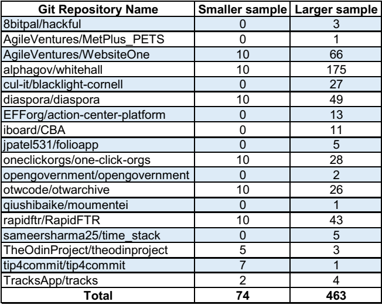
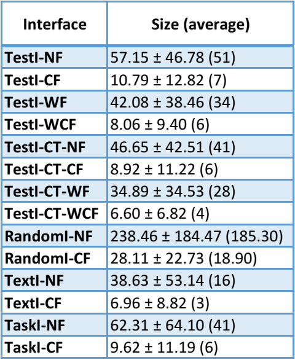
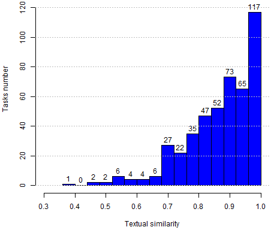
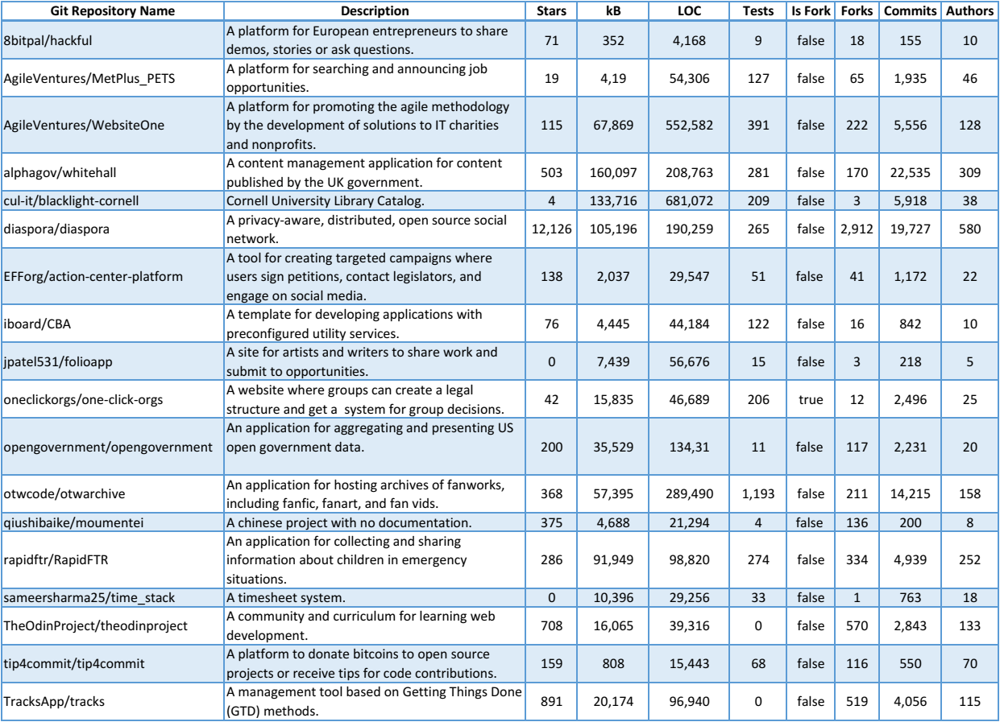

Tasks Selection
By respecting the general exclusion criteria and other specific ones that we present now, we define two task samples, each one related to the projects set remained from the task extraction stage (i.e., the set of 31 Rails projects that use Cucumber and the subset of 15 projects that further satisfy the test coverage criteria).
Since answering RQ2 demands extra restrictions and substantial effort to configure and run systems, we consider a smaller sample to answer it. The first (and smaller) sample is a set of 74 tasks from 9 projects among the 15 Rails projects that use Cucumber and coverage tools. Our initial objective was to find ten tasks of ten projects. Thus, we did not compute TestI for all tasks per project but just the necessary to reach our goal. For fairness, besides the general exclusion criteria, we also discard tasks whose tests we could not run, generate test coverage report, or verify Rails routes. Moreover, we discard tasks with identical test sets, for diversity.
To answer the other research questions, we consider a larger sample. This time, we compute TestI for all tasks per project, resulting in a preliminary valid set of 588 tasks of 20 projects. Next, we compute TextI, discarding tasks with empty TextI, which happens when a project does not have a rich history or no similar past tasks. As a result, we have a final set of 465 tasks.
Following we provide detailed information about the tasks analysis and the samples we delimited.
Tasks extraction
Collecting task data
Samples

Other characteristics of the larger sample:


Although we have not systematically targeted representativeness or even diversity, by inspecting the remained 16 projects we observe some degree of diversity with respect to the dimensions:

Note that we extracted these projects' information on January 2019 instead the time we collected the samples.